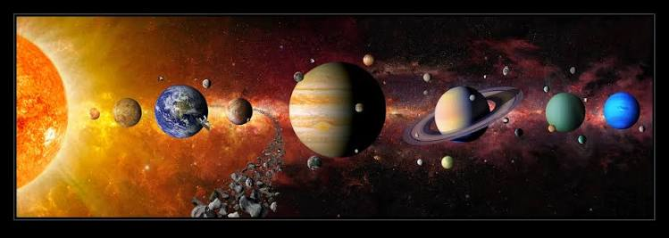

Our Solar System
The Solar System is made up of the Sun and all the objects that orbit around it. It includes eight planets, moons, dwarf planets, asteroids and comets.

The Eight Planets
Inner Planets
The four inner planets are Mercury, Venus, Earth and Mars. They are also known as terrestrial planets because they have rocky surfaces.
- Mercury
- Venus
- Earth
- Mars
Outer Planets
The four outer planets are Jupiter, Saturn, Uranus and Neptune. They are much larger than the inner planets.
- Jupiter
- Saturn
- Uranus
- Neptune
Interesting Fact
Jupiter is the largest planet in our Solar System, while Mercury is the closest planet to the Sun.